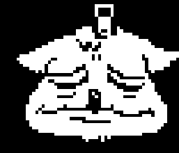
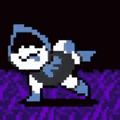
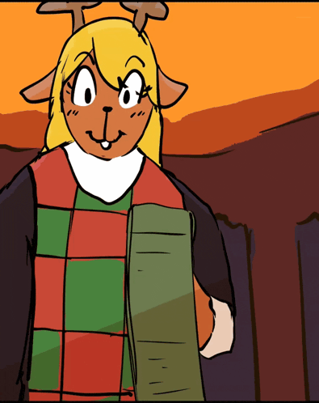

Miscellaneous, Tid Bits About ME
Naz Tamayo
About Me:
Hey Gamers, I'm Naz Tamayo, current first year student of BSIT in FEUR, here to learn even more IT concepts since butchering my first attempt. I'm conditionally introverted, becoming more social with the less people there are to hear me, also a mediocre listener, and a novice conversationalist. I'm also a GAMER, with a particular fondness for strategy, story, and sandbox games, as I like having the freedom to act how I want in a given scenario. I don't see myself as a particularly interesting fellow combined with my dry delivery, sarcasm fueled humor, and lack of patience, all that to say I'll accept being forgotten in the annals of history, but I am trying, and I try to give that same courtesy to others doing the same.

Short History
I was born at a young age in the Philippines and left, still at a young age to grow up in Doha, Qatar, where I graduated PSD with some colors, and went back to the Philippines for university before returning to Qatar After a dreadful first year, now I'm here.

Likes And Dislikes
List Of Things I Like in no particular order
- Strategy Games
- Lasagna
- Writing and Worldbuilding
- Drawing and Character Design
- The Concept of Game Development
- 3 Specific Manga
- Yellow
- Stealing Color Palettes
- Independently Produced Media
- Mangoes
List of Things I Dislike from least to most
- ME >:c
- Overexaggeration Masked As Objective Fact
- Poor Punctuation
- Actual Game Development
- Creating My Own Color Palettes
- Valorant
- Volleyball
- People Who Don't Have a Single Creative Bone In Their Body
- Annoying Voices
- Submitting Activities On Time

Goals And Aspirations
Besides the obvious goal of graduating and getting a job, preferably as an IT guy, I'd also like to publish a completed game, get used to illustrating digital art, and make and publish a comic about any of my dozens of unfinished stories.
Thanks For Reading allat Have a Postcard on me
that I made for nstp